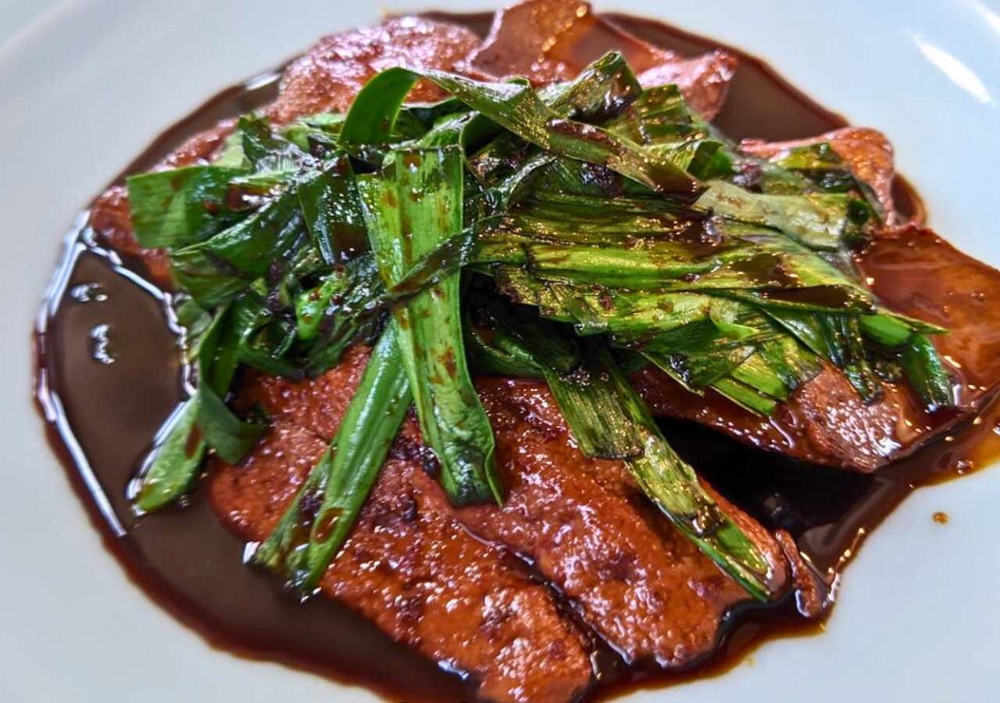
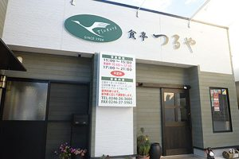

OUR PARTNERS
お店やサービスとの出会いが、いつもの時間をもっと特別に。
INTRODUCTION

内郷に店を構える「食亭つるや」は、創業84余年の歴史を誇る老舗の和食店です。
長年培ってきた伝統を大切にしながら、時代に合わせた食材や調理法を取り入れ、こだわりの料理を提供しています。
中でも、厳選した豚肩ロースを使用したボリューム満点の焼肉定食や、脂の乗った鯖を丁寧に干し上げた鯖の一夜干しは、オーナーおすすめの逸品です。
また、折詰弁当や薬膳プレートの注文にも対応しており、いずれも1週間前までの予約で利用できます。長い歴史に裏打ちされた味わいと、幅広い料理を楽しめるお店です。
SPECIAL COLLABORATION
当社のレンタカーをご利用のお客様に、提携店舗をご紹介します。
COLLABORATION DETAILS
当社のレンタカーをご利用のお客様に、提携店舗をご紹介しています。 レンタカーで提携店舗へご来店いただくことで、店舗が提供するサービスや特典をお楽しみいただけます。 今回のコラボレーションを通じて、お客様に新たなお店との出会いをお届けします。
INTRODUCTION MOVIE
動画で店舗の魅力をご覧ください。
SHOP INFORMATION
| 店舗名 | 食亭つるや |
|---|---|
| 住所 | 福島県いわき市内郷綴町町之内11 |
| 営業時間 |
【昼】 11時00分～15時00分 【夜】 17時00分～21時00分 |
| 定休日 | 日曜日 |
| 電話番号 | 0246-27-5982 |